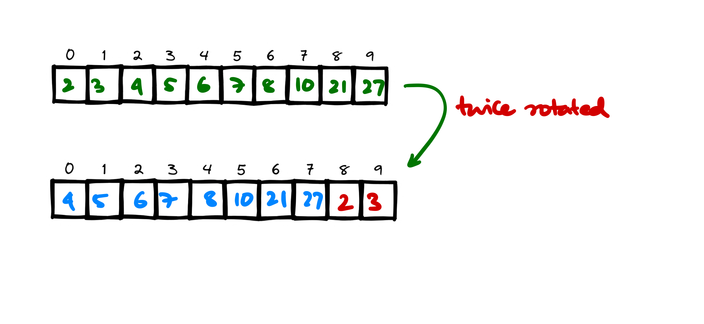
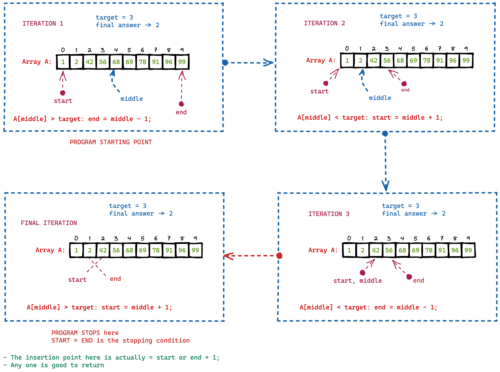
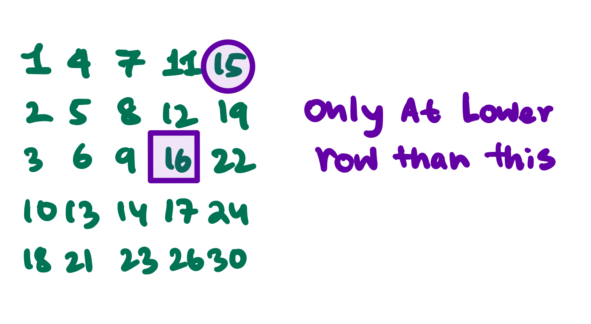
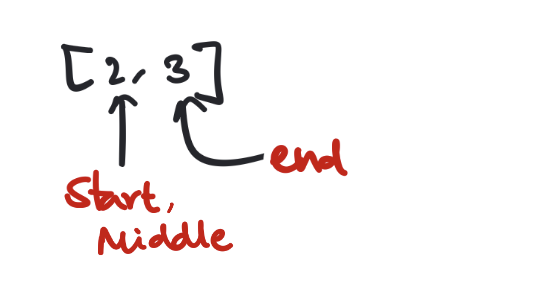

Binary Search problems
Binary search problems are really useful because they run in sublinear time. We'll be solving the following problems in order to master this
Questions discussed
- Binary Search implementation in C++
- Binary Search on Reverse Sorted Array
- Order agnostic search
- First and Last occurrence of an Element
- Count of an Element in a Sorted Array
- Number of Times a Sorted array is Rotated
- Find an Element in a Rotated Sorted Array
- Search Insert Position
- Single Element in a Sorted Array
- Minimum Difference Element in a Sorted Array
- Search in a sorted 2D matrix
- Search in a sorted matrix but not
inter-row-wisesorted - Search for Range
- Koko Eating Bananas
- Time Based Key-Value Store
- Next alphabetical element
- Find position of an element in an Infinite Sorted Array
- Index of First 1 in a Binary Sorted Infinite Array
- Binary Search on Answer Concept
- Peak Element
- Find maximum element in Bitonic Array
- Search An Element in Bitonic Array
- Allocate minimum number of pages
Binary Search implementation in C++
Binary search is really easy to implement. Main goal is to divide the search space into 2 partitions (bi) and then based on the criteria search only in one partition.
Expected time complexity
Expected time complexity is \(O(\log N)\) where N is the number of elements in the array.
Code implementation
// Return the index of the element in the array
// using binary search
int binary_search(std::vector<int> &v, int target) {
int start = 0;
int end = v.size() - 1;
int middle = (end + start) / 2;
int index = -1; // return -1 if not found
while (start <= end) {
if (v[middle] < target) {
start = middle + 1;
} else if (v[middle] > target) {
end = middle - 1;
} else {
return middle;
}
middle = (end + start) / 2;
}
return index;
}
Binary Search on Reverse Sorted Array
We've seen the binary search algorithm for a sorted array, but if the array is reverse sorted then we can easily modify the binary search algorithm here else if (v[middle] > target) { start = middle + 1; } because the target element is lower and the array is reverse sorted so the required element should be at the end partition of the array.
So a little modification of the binary search algorithm is sufficient to solve the problem.
Order agnostic search
If the array is sorted but we don't know the order of the elements whether it is ascending or descending? Then what we can do is the following
Approach
- See if the array size is 1 or not then we return.
- If the array size is more than 1, then find if \(\text{A[0]} > \text{A[1]}\) or not? If it is then the array is reverse sorted. If that is not the case then the array is sorted in ascending order.
- We run the previous or previous to previous algorithm accordingly.
First and Last occurrence of an Element
In a sorted array if we have more than one element we may want to know what is the first occurrence of some element (assuming they exists).
Approach
- We can use linear search but there is no fun in that. Instead we use a binary search, but how we'll do this?
- Let's employ a binary search subroutine, now this will find any occurrence of the target element,
- Now if this is not the first occurrence of the target element we will need to search the left subsection of the array, and in case we didn't find any we record this occurence as the first occurrence of the target element so far,
- Now we search for the target element again in the left subsection of the array by modifying
end = middle - 1
Code
int firstOccurence(vector<int> &v, int target){
int start = 0;
int end = v.size() - 1;
int middle = start + (end - start) / 2;
int first = -1;
while (start <= end) {
if (v[middle] == target) {
// modification to the general binary search
first = middle;
end = middle - 1;
} else if (v[middle] < target) {
start = middle + 1;
} else {
end = middle - 1;
}
middle = start + (end - start) / 2;
}
return first;
}
For finding the last occurence
Similarly we can find the last occurence of an element in the sorted array by modifying the previous problem slightly, by first finding the element with binary search, then instead of finding the element in the left side [for first occurence] we search the right sub array for the last occurence of the element.
int lastOccurence(vector<int> &v, int target){
int start = 0;
int end = v.size() - 1;
int middle = start + (end - start) / 2;
int last = -1;
while (start <= end) {
if (v[middle] == target) {
// modification to the general binary search
last = middle;
start = middle + 1; // look in the right subarray for the last occurrence
} else if (v[middle] < target) {
start = middle + 1;
} else {
end = middle - 1;
}
middle = start + (end - start) / 2;
}
return last;
}
Count of an Element in a Sorted Array
Similar problem on Leetcode \(\to\)
This is a very simple problem, we can find the first occurrence of an element [index] and last occurence of an element and subtract. This will return the number of times the element was found in the array.
Expected Time complexity
\(O(\text{lg} N)\) for finding the first occurrence and \(O(\text{lg} N)\) for finding the last occurrence. Total of \(O(\text{lg} N)\).
Number of Times a Sorted array is Rotated
Problem Statement
An asending sorted array \(A[0 \to N]\) once rotated becomes \(A[1 \to N] + A[0]\). When it twice rotated becomes \(A[2 \to N] + A[0 \to 1]\).
When the array is rotated \(k\) times, the array becomes \(A[K \to N] + A[0 \to K - 1]\)

Brute Force Approach
Using a linear search if we find for some \(i\) \(A[i] > A[i+1]\), that \(i\) is the index of the rotation starting point. Subtract \(i\) from length of the array to find how much rotation took place.
One more thing we can observe is that the \((\text{size - index of the minimum element})\) is the # of rotations done on the sorted array. Both of these solution is \(O(N)\) so not efficient enough.
More optimized approach
We cannot afford to search for the minimum element in the entire array, this will cost \(O(N)\) time. However if we reduce the size of the search space we can reduce the time complexity of the algorithm.
This apporach works like this:
- First check the middle \(i\), if the value is smaller than both the element to its side \(i - 1\) and \(i + 1\), then it is the point of the minimum element means this is the point of rotation.
- If this is not true then based on some idea we should reduce the size of the search space, otherwise its gonna be \(O(N)\)
- We do this very ingenious way, first we check if the middle element is smaller than the first element or not? If this is the case then the minimum element is present in the left side of the middle element.
- Else the element should be present in the right side of the middle element.
Code
class Solution {
public:
int findMin(vector<int>& nums) {
int start = 0;
int end = nums.size() - 1;
int size = nums.size();
int middle = start + (end - start) / 2;
while (start < end){
if (nums[middle] > nums[end]) {
start = middle + 1;
} else {
end = middle;
}
middle = start + (end - start) / 2;
}
return size - start + 1;
}
};
Find an Element in a Rotated Sorted Array
Approach
- If we look at the previous problem, we'll see that the (rotation point): let's call that the pivot, the subarray before pivot is sorted and subarray after pivot is sorted as well.
- If we run 2 binary search on each of the subarrays we'll find the target element in \(O(\text{lg} N)\) time.

Code
class Solution {
private:
int findRotationPoint(vector<int> &nums) {
int start = 0;
int end = nums.size() - 1;
// base cases:
if (nums.size() <= 1) return 0; // zero or one element array do not have rotations
if (nums[start] < nums[end]) return 0; // no rotation at all
int middle = start + (end - start) / 2;
while (start < end) {
if (nums[middle] > nums[end]) {
// means rotation point is right of mid
start = middle + 1;
} else {
end = middle;
}
middle = start + (end - start) / 2;
}
return start;
}
int binary_search(vector<int> &nums, int start, int end, int target) {
int mid = start + (end - start) / 2;
while (start <= end) {
if (nums[mid] == target) return mid;
if (nums[mid] < target) start = mid + 1;
if (nums[mid] > target) end = mid - 1;
mid = start + (end - start) / 2;
}
return -1;
}
public:
int search(vector<int>& nums, int target) {
if (nums.size() == 1) {
if (nums[0] == target) return 0;
else return -1;
}
int rotationPoint = findRotationPoint(nums);
// the array is sorted from 0 -> rotationPoint - 1
// and rotationPoint -> nums.size() - 1
int left = binary_search(nums, 0, rotationPoint - 1, target);
int right = binary_search(nums, rotationPoint, nums.size() - 1, target);
return std::max(left, right);
}
};
Time Complexity
To find the rotation point we make \(O(\lg N)\) comparisons and to do binary searchs on both the left and right takes \(O(\lg N)\) time. So total time complexity is \(O(\lg N)\).
Search Insert Position
Warning
Finding Floor and Ceil of an element in a Sorted Array
This is a very important idea we need to understand before you attempt this question. We need to run the binary search algorithm and see where the start and end stops after the execution. Do it yourself, and put it in the comments below. Do a dry run on the binary search algorithm and see what are the start and end points to after the execution finishes. I'll add a video for this later.
Given a sorted array of distinct integers and a target value, return the index if the target is found. If not, return the index where it would be if it were inserted in order.
The algorithm must run with \(O(\lg n)\) complexity.
Approach
We can employ the normal binary search algorithm, and instead of returning -1 if we don't find the target number, we'll carefully look what all the pointers are pointing towards at the end of the binary search algorithm.
If we look carefully we'll find that at the end of the binary search if there is no element present in the array, the pointer \(\text{start}\) and \(\text{end} - 1\) points to the insertion point for that element.
Careful Dry run with an example

Code
class Solution {
public:
int searchInsert(vector<int>& nums, int target) {
int start = 0;
int end = nums.size() - 1;
int middle = start + (end - start) / 2;
while (start <= end) {
if (nums[middle] == target) return middle;
if (nums[middle] > target) {
end = middle - 1;
} else if (nums[middle] < target) {
start = middle + 1;
}
middle = start + (end - start) / 2;
}
// send back start or end - 1 instead of -1.
return start;
}
};
Single Element in a Sorted Array
Problem Statement
You are given a sorted array consisting of only integers where every element appears exactly twice, except for one element which appears exactly once. Return the single element that appears only once.
Your solution must run in \(O(\lg n)\) time and \(O(1)\) space.
Approach
- As the solution is required to be run in \(O(1)\) space and \(O(\lg n)\) time it means we have to use binary search.
- Now we run the default binary search algorithm with some modification. We go to the middle element, now question arises based on what should we divide the array and only solve on one of those two part?
- If you look closely at the array, you will notice that for each pair in the left side of the odd one out
<int, int>the index is like this<even, odd>and for each pairs in the right side of the odd one out the index is like this<odd, even>. - We identify how the indexes are aranged and we jump to solve a smaller subproblem.
Code
class Solution {
public:
int singleNonDuplicate(vector<int>& nums) {
// if the size is 1 then it is the odd one out
if (nums.size() == 1) return nums[0];
// boundary cases:
if (nums[0] != nums[1]) return nums[0];
if (nums[nums.size() - 1] != nums[nums.size() - 2]) return nums[nums.size() - 1];
int start = 0;
int end = nums.size() - 1;
int middle = start + (end - start) / 2;
while (start <= end) {
int atMid = nums[middle];
if (atMid != nums[middle - 1] and atMid != nums[middle + 1]) {
// case where the middle element is the odd one out
return atMid;
}
// check if the odd one out is the left or right sub part
// case 1:
// [1, 1, ..., 2, 2, ...]
// | middle
if (nums[middle] == nums[middle + 1]) {
// now check if middle is even and middle + 1 is odd?
// if this is true then odd one out is in the right subarray
if (middle % 2 == 0) {
start = middle + 1;
} else {
end = middle - 1;
}
}
// case 2:
// [1, 1, ..., 2, 2, ...]
// | middle
if(nums[middle] == nums[middle - 1]) {
// now check if middle is odd and middle - 1 is even?
if (middle % 2 != 0) {
start = middle + 1;
} else {
end = middle - 1;
}
}
middle = start + (end - start) / 2;
}
return -1;
}
};
Minimum Difference Element in a Sorted Array
Problem Statement
Given an array of numbers sorted in ascending order, find the element in the array that has the minimum difference with the given ‘key’.
Examples
Input: [4, 6, 10], key = 7
Output: 6
Explanation: The difference between the key '7' and '6' is minimum than any other number in the array.
Approach
- If the element is present in the array, we should return it.
- If not present, then
- We should check the ceil and floor of the element from the array.
- Floor is the end pointer when the binary search is finished and ceil would be
end + 1pointer because the array is sorted. - Next we should check what is lower difference between floor and target or ceil or target, which ever is lower that is closer to target.
C++ Code Solution
int minDiffElement(vector<int> &v, int target) {
int start = 0;
int end = v.size() - 1;
int middle = start + (end - start) / 2;
while (start <= end) {
if (v[middle] == target) return target;
if (v[middle] < target) start = middle + 1;
if (v[middle] > target) end = middle - 1;
middle = start + (end - start) / 2;
}
// lowerbound = at index end
int diFFWithLowerBound = std::abs(target - v[end]);
int diFFWithUpperBound = std::abs(v[end+1] - target);
if (diFFWithLowerBound > diFFWithUpperBound) return v[end + 1];
if (diFFWithLowerBound < diFFWithUpperBound) return v[end];
return -1; // both are same distant
}
Time and space complexity
No extra space is required, so \(O(1)\) space and total of \(O(\lg n)\) time is required for binary search.
Search in a sorted 2D matrix
Similar Problem on Leetcode \(\to\)
Problem Statement
Write an efficient algorithm that searches for a value target in an \(M \times N\) integer matrix matrix. This matrix has the following properties:
- Integers in each row are sorted from left to right.
- The first integer of each row is greater than the last integer of the previous row. Also can be termed as inter-row-wise sorted.
Example
Matrix: \(M_A = \begin{bmatrix} 1 & 3 & 5 & 7 \\ 10 & 11 & 16 & 20 \\ 23 & 30 & 34 & 60 \end{bmatrix}\)
Approach
First you start a probe for the row in which the data may be present, then search column wise. Total time taken in this approach is \(O(\log_2 \text{Rows}) + O(\log_2 \text{Columns})\).
Check out the following code to see how the edge cases are handled.
Code
class Solution {
public:
bool searchMatrix(vector<vector<int>>& matrix, int target) {
// base cases
int rows = matrix.size();
int cols = matrix[0].size();
// only one element in the matrix
if (rows == 1 and cols == 1) return matrix[0][0] == target;
// matrix data out of bounds
if (target < matrix[0][0] or target > matrix[rows-1][cols-1]) return false;
// start a row probe to find in which row the data may be there?
int start = 0;
int end = matrix.size() - 1;
int middle = start + (end - start) / 2;
while (start <= end) {
if (matrix[middle][0] == target) return true;
if (matrix[middle][0] > target) end = middle - 1;
if (matrix[middle][0] < target) start = middle + 1;
middle = start + (end - start) / 2;
}
// start is the lower bound on the row ID
int rowID = end;
cout << rowID << endl;
// now we should start a column probe
start = 0;
end = matrix[0].size() - 1;
middle = start + (end - start) / 2;
while (start <= end) {
if (matrix[rowID][middle] == target) return true;
if (matrix[rowID][middle] > target) end = middle - 1;
if (matrix[rowID][middle] < target) start = middle + 1;
middle = start + (end - start) / 2;
}
return false;
}
};
Search in a sorted matrix but not inter-row-wise sorted
Find the problem on Leetcode \(\to\)
Problem Statement
The problem statement is almost identical similar but the rule first integer of each row is greater than the last integer of the previous row does NOT apply here.
Example
Matrix: \(M_B = \begin{bmatrix} 1 & 3 & 5 & 7 \\ 2 & 4 & 64 & 20 \\ 3 & 5 & 134 & 60 \end{bmatrix}\)
Approaches
- We can do a row wise binary search to find the element, that'll take \(O(\text{|rows|} \lg \text{|cols|})\) time to complete.
- Otherwise we can also implement a linear time algorithm to find the element. This will be much faster than the log approach.
- Here we'll do the followings, first we'll start from the first row and last column of the matrix
- then if we find the element is \(\geq\) than the target means it'll be available only at a lower row than the current row. 
- Here target is 16 and 15 is at the first row and last column of the matrix. So we should go down by one row.
- At the second row we see 19 that is greater than the target \(16\) so we should go left by one column because \(16\) can not be present below \(19\) in the last column.
- This is how we find the element.
Code
CODE WITH BINARY SEARCH
class Solution {
private:
bool rowWiseSearch(vector<vector<int>>& matrix, int row, int target) {
int start = 0;
int end = matrix[row].size() - 1;
int middle = start + (end - start) / 2;
while (start <= end) {
if(matrix[row][middle] == target) return true;
if (matrix[row][middle] > target) end = middle - 1;
if (matrix[row][middle] < target) start = middle + 1;
middle = start + (end - start) / 2;
}
return false;
}
public:
bool searchMatrix(vector<vector<int>>& matrix, int target) {
int rows = matrix.size();
for (int i=0; i<rows; i++) {
bool found = rowWiseSearch(matrix, i, target);
if (found == true) return true;
}
return false;
}
};
CODE WITH MATRIX-LINEAR SEARCH
class Solution {
public:
bool searchMatrix(vector<vector<int>>& matrix, int target) {
// base case: 1x1 matrix
if (matrix.size() == 1) {
if (matrix[0].size() == 1) return matrix[0][0] == target;
}
// base case: numbers out of bounds
if (target < matrix[0][0] or target > matrix[matrix.size() - 1][matrix[0].size() - 1]) {
return false;
}
int rows = matrix.size();
int cols = matrix[0].size();
int i = rows - 1;
int j = 0;
while(i>=0 and j<cols) {
if (matrix[i][j] == target) return true;
if (matrix[i][j] < target) {
j++;
} else {
i--;
}
}
return false;
}
};
Time Complexity
The matrix linear search takes \(O(\text{|rows|} + \text{|cols|})\) time because at worst case we'll reach to last row and first column of the matrix.
Search for Range
Given an array of integers nums sorted in non-decreasing order, find the starting and ending position of a given target value. If target is not found in the array, return \([-1, -1]\).
We must write an algorithm with \(O(\log_2 n)\) runtime complexity.
Example
Input: nums = [5,7,7,8,8,10], target = 8
Output: [3,4]
Input: nums = [5,7,7,8,8,10], target = 6
Output: [-1,-1]
Input: nums = [], target = 0
Output: [-1,-1]
Approach
Two things we need to find here, these are the first occurrence of some repeating elements and last occurrence of some repeating elements. Before we do anything we should first search in \(O(\lg n)\) whether the array contains the element or not, if not return \([-1,-1]\). Otherwise the program could become complicated while searching for first occurrence and last occurrence also search if it's there or not. Better to separate the logic.
So we should write 3 subroutines: firstOccurrence() and lastOccurrence() and a routine for binary_search(). We'll return \([-1, -1]\) if binary_search() returns false.
To calculate the firstOccurrence() we modify the binary search subroutine itself. When we find the middle element greater than or equal to the target then instead of setting \(\text{end} = \text{middle} - 1\) we'll include the end as middle (set \(\text{end} = \text{middle}\)).
To calculate the lastOccurence() we'll write the exact same code as firstOccurence() (using symmetry). However there is a problem with the code. The program for lastOccurence() will not halt and loop forever in the following scenario:
the code will fall into infinite loop when the arrangement becomes this

We'll manually update the lastOccurrence in this case.
Code
class Solution {
public:
int firstOccurrence(vector<int> &nums, int target) {
int start = 0;
int end = nums.size() - 1;
int middle = start + (end - start) / 2;
// [1,2,3,4,4,4,7]; target = 4;
// | | |
// start. mid. end.
// next step: [1,2,3,4]
// | |
// mid end
// next step: [3,4]
// | |
// s,m end
// next step: [4]
// | start, end, middle
while (start < end) {
if (nums[middle] < target) {
start = middle + 1;
} else {
end = middle;
}
middle = start + (end - start) / 2;
}
return start;
}
int lastOccurrence(vector<int> &nums, int target) {
int start = 0;
int end = nums.size() - 1;
int middle = start + (end - start) / 2;
while (start < end) {
// there is a condition when it loops forever
// end = start + 1;
// [k , j]
// | |
// m,s end
// check for this
if (start == end - 1) {
// check for a case where [2,2] and target is 2
if (nums[start] == nums[end]) {
return end;
}
// manually escape this situation
// there can be case [5, 7] and t=5 where it loops forever because start = middle
if (nums[start] == target) {
return start;
} else if (nums[end] == target){
// case for [2,3] and t=3
return end;
}
}
if (nums[middle] > target) {
end = middle - 1;
} else {
start = middle;
}
middle = start + (end - start) / 2;
}
return start;
}
bool binary_search(vector<int> &nums, int target) {
int start = 0;
int end = nums.size() - 1;
int middle = start + (end - start) / 2;
while (start <= end) {
if (nums[middle] == target) {
return true;
}
if (nums[middle] < target) start = middle + 1;
if (nums[middle] > target) end = middle - 1;
middle = start + (end - start) / 2;
}
return false;
}
vector<int> searchRange(vector<int>& nums, int target) {
if (not binary_search(nums, target)) {
vector<int> answer = {-1,-1};
return answer;
}
vector<int> answer;
int firstocc = firstOccurrence(nums, target);
int lastocc = lastOccurrence(nums, target);
answer.push_back(firstocc);
answer.push_back(lastocc);
return answer;
}
};
Koko Eating Bananas
Find the problem on Leetcode \(\to\)
Problem Statement
Koko loves to eat bananas. There are n piles of bananas, the ith pile has piles[i] bananas. The guards have gone and will come back in h hours.
Koko can decide her bananas-per-hour eating speed of k. Each hour, she chooses some pile of bananas and eats k bananas from that pile. If the pile has less than k bananas, she eats all of them instead and will not eat any more bananas during this hour.
Koko likes to eat slowly but still wants to finish eating all the bananas before the guards return.
Return the minimum integer k such that she can eat all the bananas within h hours.
Examples
Input: piles = [3,6,7,11], h = 8
Output: 4
Input: piles = [30,11,23,4,20], h = 5
Output: 30
Input: piles = [30,11,23,4,20], h = 6
Output: 23
Code
class Solution {
private:
pair<bool, int> finishableCheck(vector<int> &piles, int k, int h) {
// check finishability with k bananas per hour
// and given h hours to play time
// retruns finishable or not and finish time
int eatableTime = 0;
for (auto l:piles) {
eatableTime += l/k + (l % k == 0 ? 0 : 1);
}
pair<bool, int> p;
p.second = eatableTime;
if (eatableTime > h) {
p.first = false;
return p;
}
p.first = true;
return p;
}
public:
int minEatingSpeed(vector<int>& piles, int h) {
if (piles.size() == 1) {
return ceil((double) piles[0] / (double)h);
}
// [piles of banana]
// [213 45 5 6 7 7 8]
// total available time is h hours
// banana eating speed = k
// lowest possible value for k is 1
// eat at least min(piles[i]) banana per hour.
int lo = 1;
// and highest possible banana per hour
// should be = piles[i] for i piles[i] is maximum
int hi = piles[0];
for (int i:piles) {
if (i > hi) hi = i;
}
int middle = lo + (hi - lo) / 2;
while (lo < hi) {
// now check for middle if this satisfies the
// eating banana pile every hour
// and finishing before guards comes back
cout << "From " << lo << " to " << hi << ": ";
pair<bool, int> p = finishableCheck(piles, middle, h);
if (p.first == true) hi = middle;
if (p.first == false and p.second > h) {
lo = middle + 1;
}
cout << " middle: " << middle << " p.first = " << p.first << " p.second = " << p.second << endl;
middle = lo + (hi - lo) / 2;
}
return hi;
}
};
Time Based Key-Value Store
Find the problem on Leetcode \(\to\)
Problem Statement
Design a time-based key-value data structure that can store multiple values for the same key at different time stamps and retrieve the key's value at a certain timestamp.
Task is to implement the TimeMap class,
TimeMap()Initializes the object of the data structure.void set(String key, String value, int timestamp)Stores the key key with the value value at the given time timestamp.String get(String key, int timestamp)Returns a value such that set was called previously, withtimestamp_prev <= timestamp. If there are multiple such values, it returns the value associated with the largesttimestamp_prev. If there are no values, it returns"".
Example
Input
["TimeMap", "set", "get", "get", "set", "get", "get"]
[[], ["foo", "bar", 1], ["foo", 1], ["foo", 3], ["foo", "bar2", 4], ["foo", 4], ["foo", 5]]
Output
[null, null, "bar", "bar", null, "bar2", "bar2"]
Explanation
TimeMap timeMap = new TimeMap();
timeMap.set("foo", "bar", 1); // store the key "foo" and value "bar" along with timestamp = 1.
timeMap.get("foo", 1); // return "bar"
timeMap.get("foo", 3); // return "bar", since there is no value corresponding to foo at timestamp 3 and timestamp 2, then the only value is at timestamp 1 is "bar".
timeMap.set("foo", "bar2", 4); // store the key "foo" and value "bar2" along with timestamp = 4.
timeMap.get("foo", 4); // return "bar2"
timeMap.get("foo", 5); // return "bar2"
Approach #1
- We'll use a time-based map implementation. For each timestamp we'll record all the {key, value} pairs coming in.
- And return when asked. If the timestamp is not found then we'll see what is the last timestamp for which this key was recorded, we'll return that.
- To find the last timestamp for which this key was recorded we need to do a linear decrement of the timestamp and check if the key is present or not for every time stamps.
- Else we can change the design of the map and get a better upper bound on the time complexity. As the times are always in sorted order (time is always increasing), we maybe able to use binary search.
- For this particular design following is the code.
Hashtable design
| timestamp | unordered_map<Key, Value> |
|---|---|
| 1 | <"outlaw", "1673"> |
| 4 | <"outlaw", 33> |
Code for Approach #1
class TimeMap {
private:
unordered_map<int, unordered_map<string, string>> mp;
public:
TimeMap() {}
void set(string key, string value, int timestamp) {
mp[timestamp][key] = value;
}
string get(string key, int timestamp) {
// if there is no timestamp for key "key"
if (mp.find(timestamp) == mp.end()) {
while (timestamp){
// go in reverse order of timestamp to find the key if exists before or not?
// return the last
if (mp[timestamp].find(key) != mp[timestamp].end()) {
return mp[timestamp][key];
}
timestamp--;
}
}
return mp[timestamp][key];
}
};
/**
* Your TimeMap object will be instantiated and called as such:
* TimeMap* obj = new TimeMap();
* obj->set(key,value,timestamp);
* string param_2 = obj->get(key,timestamp);
*/
Approach #2
The previous design was a bit easier to understand but had a flaw that if we don't find element in the map for some timestamp then we'd have to linearly decrease the timestamps and check for the key, else we'll use a better design.
For each key we'll, maintain a vector<pair<string, int>> value & time pair. Then if there exists any key and don't exists the asked timestamp we can give back the binary search lower bound from the array.
Hashtable new design
| Key | pair<Value, TimeStamp> |
|---|---|
| outlaw | <"1673", 1>, <"33", 4> |
| -- | -- |
Now with this design of the system we can do a simple binary search on the lower bound of the timestamp in \(O(\lg N)\) time.
Code for Approach #2
class TimeMap {
private:
// hashtable design
// unordered_map<key, vector<pair<value, timestamp>>>
unordered_map<string, vector<pair<string, int>>> map;
public:
TimeMap() {}
void set(string key, string value, int timestamp) {
if (map.find(key) == map.end()) {
// there doesn't exists a key, first time the key has come up
// so add this
vector<pair<string, int>> v= {{value, timestamp}};
map.insert({key,v});
} else {
// means key is inserted at a before timestamp than now
// this becomes naturally sorted with the timestamps
map[key].push_back({value, timestamp});
}
}
string get(string key, int timestamp) {
// we assume key is already present before making a query
// we also have a time stamp
// so we'll do a binary search on the timestamp to get the result at the given time stamp
// else we'll return the lower bound on the timestamp
int start = 0;
int end = map[key].size() - 1;
// basecase
// query is at the timestamp far before first key to be registered
int middle = start + (end - start) / 2;
// O(lg n) compare
while (start <= end) {
if (map[key][middle].second == timestamp) return map[key][middle].first;
if (map[key][middle].second > timestamp) end = middle - 1;
if (map[key][middle].second < timestamp) start = middle + 1;
middle = start + (end - start) / 2;
}
if (end == - 1) return "";
return map[key][end].first;
}
};
/**
* Your TimeMap object will be instantiated and called as such:
* TimeMap* obj = new TimeMap();
* obj->set(key,value,timestamp);
* string param_2 = obj->get(key,timestamp);
*/
Next alphabetical element
Find position of an element in an Infinite Sorted Array
Index of First 1 in a Binary Sorted Infinite Array
Binary Search on Answer Concept
Peak Element
Find maximum element in Bitonic Array
Search An Element in Bitonic Array
Allocate minimum number of pages
Comments
This comments system is powered by GitHub Discussions